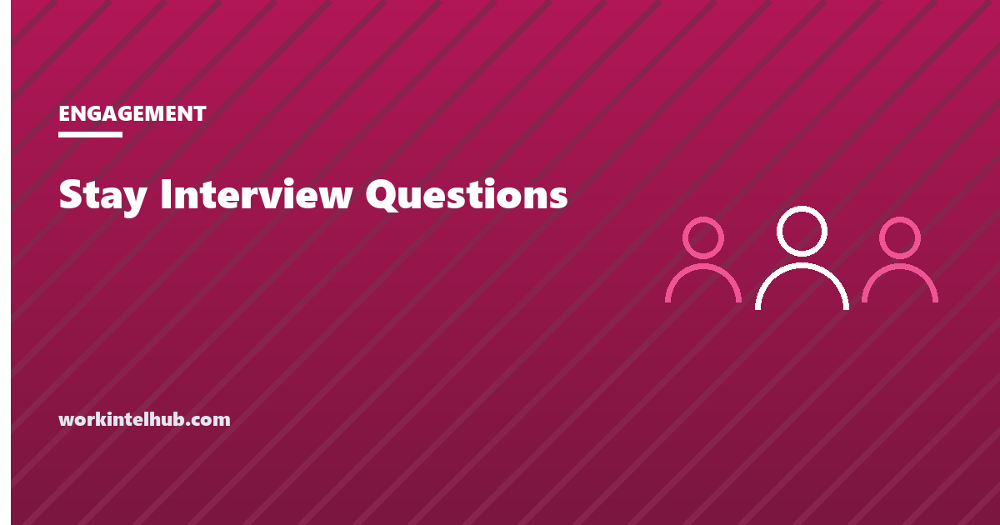

Stay Interview Questions

A stay interview is a structured, one-to-one conversation between a manager and a current employee about why they stay, what would make them leave, and what would need to change. It asks the exit interview's questions while the answers can still change something.
The questions below are grouped by what they surface. Build a script of six to eight, and then read the section on what to do with the answers, because a stay interview that produces a list nobody acts on is worse than not asking.
Build the script
What keeps them
What would make them leave
The work
The manager
Growth and recognition
Close
Six to eight questions is enough for a 30-minute conversation. The manager conducts it, not HR, which is the main difference from an exit interview.
Stay interview versus exit interview
| Stay interview | Exit interview | |
|---|---|---|
| When | While the person is staying, typically annually and after big changes | In the final week |
| Who asks | The direct manager | HR or someone outside the reporting line |
| Can the answer change anything? | Yes, for this person | Only for the next person |
| Bias | People soften criticism of a manager they still report to | People protect references and skip the interview if angry |
| Output | Two or three commitments to one person | Aggregated themes across leavers |
The bias row is the one to design around. The stay interview is conducted by the manager precisely because the manager can act on it, but that means the employee is describing their manager to their manager. The questions in the manager group are phrased to make that easier, and the manager's job is to receive the answers without defending. Our guide to exit interview questions covers the other side of the table.
How to run one
- Say what it is, a week ahead. "I want to spend thirty minutes on what keeps you here and what would change that. Nothing is wrong; I ask everyone." Surprise stay interviews read as performance conversations.
- Separate it from the one-on-one and from the review. Different meeting, different document. The one-on-one is where the follow-up happens, not where the interview does.
- Ask, then stop talking. The most useful answers come after the pause that follows the first answer.
- No notes during; a summary after. Write it up within a day and share it with the employee for correction. That is the document you act on.
- Close with commitments. Two or three things you will do, with dates, and one thing you cannot do, said plainly.
- Everyone, not just the people you are worried about. Interviewing only flight risks tells the team who you think the flight risks are.
When the answer is one you cannot give
Someone will say pay, or promotion, or a manager change, and it will not be in your gift. The stay interview does not fail at that point; it fails if you pretend.
Say what you can do, say what you cannot and why, and say what you will find out. "I cannot change the band this year. I can put you forward for the lead role on the migration, which is the thing that gets people to the next band, and I will find out by Friday whether the mid-year review can be brought forward." An honest no with a real alternative retains more people than a vague maybe.
Then record what was asked for and what was answered. Across a team, those records are the evidence for the conversation with your own manager about pay bands, headcount or workload, which is where the answers you cannot give get given. The company-level version of the same signal comes from the engagement survey, and the strategies that tend to move retention are in our retention guide.
Key takeaways
- A stay interview asks why someone stays and what would make them leave, while there is still time to act.
- The manager conducts it, because the manager can act on it. That also means designing for the softening that comes with describing a manager to their face.
- Announce it a week ahead, keep it separate from one-on-ones and reviews, ask and then stop talking, and write the summary afterwards.
- Interview everyone, not only suspected flight risks.
- Close with two or three dated commitments and one honest no. An honest no with an alternative retains more than a vague maybe.
- Record what was asked and answered; across the team it is the evidence for pay, headcount and workload conversations upward.
Frequently asked questions
What is a stay interview?
A structured conversation between a manager and a current employee about what keeps them at the company, what might make them leave, and what would need to change. It is the exit interview asked in time to act on the answers.
What are the best stay interview questions?
Questions that separate what keeps someone from what would push them out: what they look forward to, what they would miss, what might tempt them to leave, whether they have thought about leaving in the past year, what they would drop from their role, what the manager could do differently, and what one change would make them more likely to stay.
Who should conduct a stay interview?
The employee's direct manager, because the point is to act on the answers and the manager is the person who can. HR can run them where the relationship with the manager is itself the problem, but that is the exception.
How often should stay interviews happen?
Once a year for everyone, and after significant changes such as a reorganisation, a new manager or a major project ending. More often than that and they merge into one-on-ones; less often and the answers arrive too late.
How long should a stay interview take?
About thirty minutes, with six to eight questions. Longer conversations tend to repeat themselves. The follow-up, not the interview, is where the time should go.
What if the employee asks for something I cannot give?
Say so plainly, explain why, offer what you can do instead, and commit to finding out anything you do not know. Record the request. Requests that recur across the team are the case for the conversation with your own manager about pay, headcount or workload.